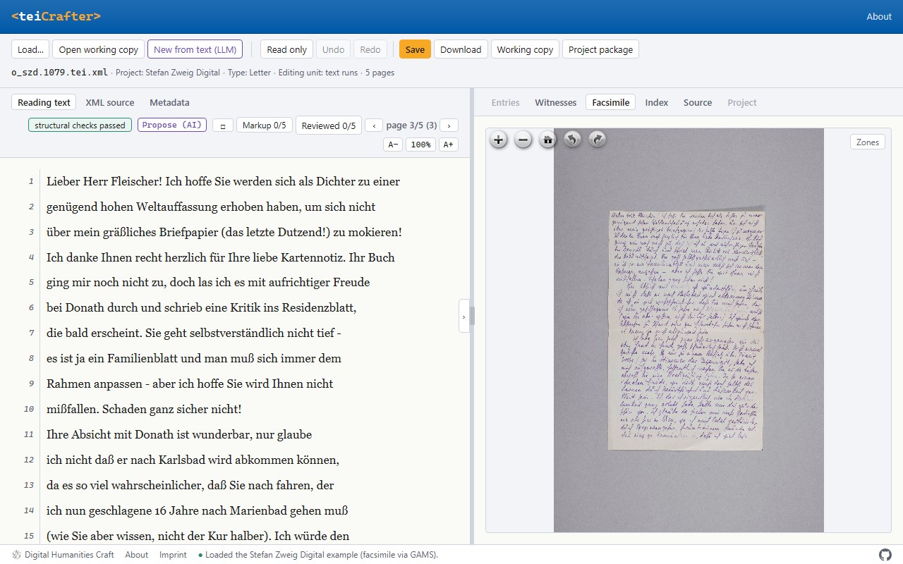

A browser editor for TEI-XML
teiCrafter opens any TEI document and lets you correct the text and annotate entities with authority identifiers (GND, GeoNames, Wikidata). Where a facsimile is linked, text and page image appear side by side. It runs in the browser; your file stays local.

Example projects
Wenzelsbibel
Codex 2759 of the Austrian National Library: word-level encoding with IIIF facsimile. Where the licence-restricted file is not present, a structurally identical sample file loads instead.
Load exampleZBZ Jeanne Hersch
A letter from the Jeanne Hersch papers at the Zentralbibliothek Zürich: line-level OCR-derived TEI with page scans. Where the rights-restricted original is not present, a structurally identical sample file loads instead.
Load exampleStefan Zweig Digital
A letter by Stefan Zweig (1901): line-level transcription with the facsimile from the GAMS repository.
Load exampleHow teiCrafter treats your document
Lossless saving
Your edits go into the original file text and nothing else changes: whitespace, attribute order, comments and entity notation outside the edited passages remain untouched. A document saved without edits is identical to the opened file. Direct saving to disk requires a Chromium-based browser; elsewhere the file is offered as a download.
No configuration needed
The editing unit is read from the document itself: words where the edition encodes <w>, lines otherwise. Image zones and text are linked through @facs, so selecting one highlights the other.
Validated while you type
As you edit, the editor checks that the XML stays well-formed and that its structure is preserved (identifiers and element counts unchanged), and reports the result next to the text. How machine-generated content is handled is described in About.
Optional: a first draft from plain text
With a language model you configure, New from text (LLM) drafts TEI from a plain transcription; the draft is marked as machine-generated and unreviewed until you check it in the editor.
Editions built on teiCrafter
An edition project can derive its own editor from teiCrafter, as a fork that keeps merging the base or as a separate editor that follows its design. Each entry names its form, its data and their licence.
Status
teiCrafter is a research preview. It stays one until editors and users have accepted it for their work and a release has been decided. The technical scope that has been tested so far is recorded in the verification reports.